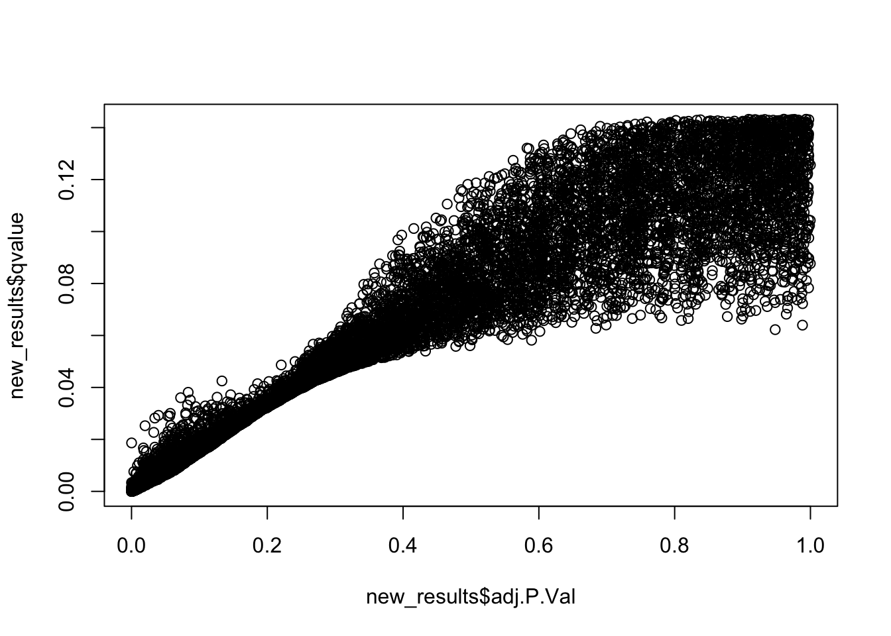
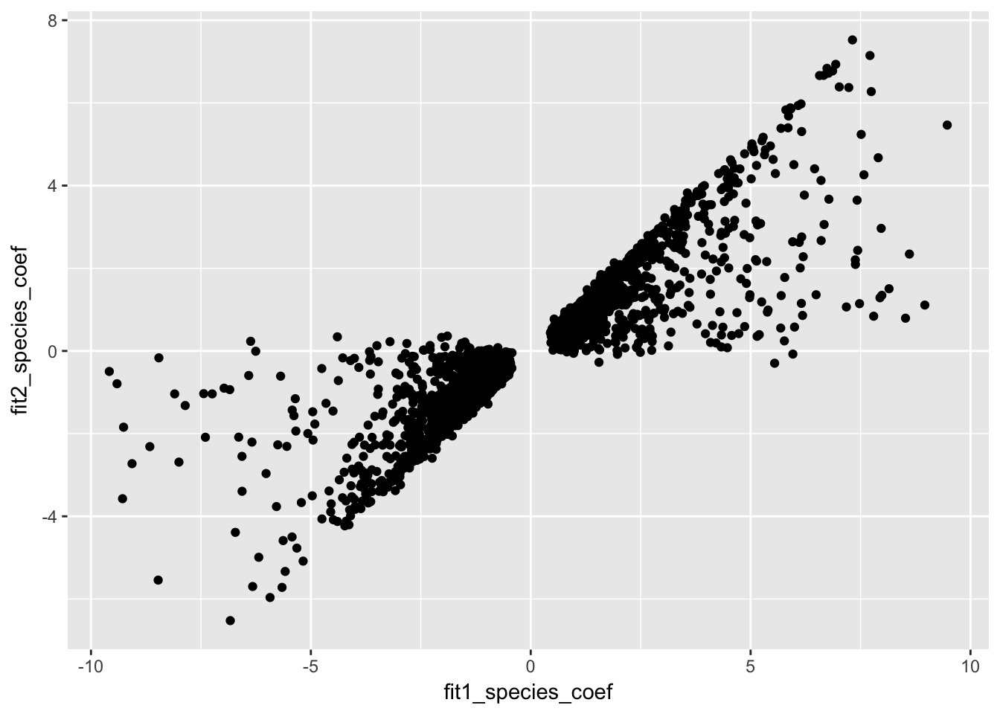

In this script, we will perform a joint analysis of methylation and gene expression levels in humans and chimpanzees only. We chose only these two species because the number of genes that we had methylation values for around the promoter was quite low when we required orthology between humans, chimps, and rhesus. This script will compute the on the beta coefficients. In this script, we will make DE decisions based on FSR rather than FDR. This script provides an example for the human heart versus human kidney.
Permutations are computationally intensive, so we have an RMarkdown example with permuations and an R script to run the code and permutations (in the “code” section).
# Load libraries/data
library("edgeR")Warning: package 'edgeR' was built under R version 3.2.4Loading required package: limmaWarning: package 'limma' was built under R version 3.2.4library("limma")
library("plyr")Warning: package 'plyr' was built under R version 3.2.5library("ggplot2")Warning: package 'ggplot2' was built under R version 3.2.5cpm.voom.cyclic <- readRDS("../data/human_chimp_orth_cpm_voom_cyclic.rds")
exp_methyl <- read.table("../data/human_chimp_orth_exp_methyl_7725_hum.txt", header = T, stringsAsFactors = F)
samples <- read.table("../data/human_chimp_orth_new_sample_info.txt", header = T, stringsAsFactors = F)
# Get sample info
species <- as.data.frame(samples[,4])
tissue <- as.data.frame(samples[,5])
RIN <- as.data.frame(samples[,6])# Human Heart v Kidney
# First, pick out the genes that are DE (you run the entire analysis only on genes that are DE)
chimp_human_heart <- c(17, 20, 21, 24, 25, 28, 29)
#chimp_human_heart <- c(1, 2, 5, 6, 9, 10, 13, 14)
FSR_level <- 0.05
FDR_level <- FSR_level
tissue <- tissue[chimp_human_heart,]
tissue_no_extra <- droplevels.factor(tissue, "liver")
design <- model.matrix(~ as.factor(tissue_no_extra) + RIN[chimp_human_heart,])
fit_all <- lmFit(cpm.voom.cyclic[,chimp_human_heart], design)
fit_all <- eBayes(fit_all)
# Run ASH
library(ashr)
# Prepare the data for ASH
tests <- colnames(fit_all$coefficients)
results <- vector(length = length(tests), mode = "list")
names(results) <- tests
# Perform multiple testing correction with adaptive shrinkage (ASH)
#
# x - object MArrayLM from eBayes output
# coef - coefficient tested by eBayes
run_ash <- function(x, coef){
#stopifnot(class(x) == "MArrayLM", coef %in% colnames(x$coefficients),
# length(unique(x$df.total) == 1))
result <- ash(betahat = x$coefficients[, coef], sebetahat = x$stdev.unscaled[, coef] * sqrt(x$s2.post), df = x$df.total[1])
return(result)
}
get_results <- function(x, number = nrow(x$coefficients), sort.by = "none",
...) {
# x - object MArrayLM from eBayes output
# ... - additional arguments passed to topTable
stopifnot(class(x) == "MArrayLM")
results <- topTable(x, number = number, sort.by = sort.by, ...)
return(results)
}
# Get lfsr, lfdr, s value, q value, and a beta_est value.
for (test in tests) {
# Extract limma results
results[[test]] <- get_results(fit_all, coef = test)
# Add mutliple testing correction with ASH
output_ash <- run_ash(fit_all, coef = test)
results[[test]] <- cbind(results[[test]], sebetahat = output_ash$data$s, lfsr = output_ash$result$lfsr,
lfdr = output_ash$result$lfdr, qvalue = output_ash$result$qvalue,
svalue = output_ash$result$svalue, beta_est = output_ash$result$PosteriorMean, se_est =
output_ash$result$PosteriorSD)
}Due to absence of package REBayes, switching to EM algorithm
Due to absence of package REBayes, switching to EM algorithm
Due to absence of package REBayes, switching to EM algorithmnew_results <- results[["as.factor(tissue_no_extra)kidney"]]
summary(new_results) genes logFC AveExpr
Length:12184 Min. :-12.96636 Min. :-5.971
Class :character 1st Qu.: -0.57924 1st Qu.: 3.312
Mode :character Median : 0.01017 Median : 4.781
Mean : 0.05666 Mean : 4.652
3rd Qu.: 0.59604 3rd Qu.: 5.997
Max. : 9.09175 Max. :12.011
t P.Value adj.P.Val B
Min. :-37.00466 Min. :0.00000 Min. :0.000004 Min. :-7.287
1st Qu.: -1.56436 1st Qu.:0.02062 1st Qu.:0.082437 1st Qu.:-6.642
Median : 0.02858 Median :0.15532 Median :0.310619 Median :-5.759
Mean : -0.09235 Mean :0.28145 Mean :0.382664 Mean :-4.762
3rd Qu.: 1.57721 3rd Qu.:0.49301 3rd Qu.:0.657334 3rd Qu.:-3.807
Max. : 22.19081 Max. :0.99992 Max. :0.999919 Max. :12.469
sebetahat lfsr lfdr
Min. :0.1907 Min. :0.0000007 Min. :0.0000003
1st Qu.:0.2943 1st Qu.:0.0726710 1st Qu.:0.0430456
Median :0.3728 Median :0.2385547 Median :0.1351390
Mean :0.4288 Mean :0.2680545 Mean :0.1432319
3rd Qu.:0.4899 3rd Qu.:0.4512514 3rd Qu.:0.2311110
Max. :3.3757 Max. :0.7029781 Max. :0.4163389
qvalue svalue beta_est
Min. :2.700e-07 Min. :6.600e-07 Min. :-6.237638
1st Qu.:1.471e-02 1st Qu.:2.531e-02 1st Qu.:-0.365334
Median :5.129e-02 Median :8.828e-02 Median : 0.005575
Mean :5.714e-02 Mean :1.032e-01 Mean : 0.017103
3rd Qu.:9.557e-02 3rd Qu.:1.730e-01 3rd Qu.: 0.367868
Max. :1.432e-01 Max. :2.681e-01 Max. : 6.169521
se_est
Min. :0.1655
1st Qu.:0.2883
Median :0.3576
Mean :0.4304
3rd Qu.:0.4795
Max. :2.6383 plot(new_results$adj.P.Val, new_results$qvalue)
# Find the DE genes
HvC_Heart_fit_all = topTable(fit_all, coef=2, adjust="BH", number=Inf, sort.by="none")
HvC_Heart_fit_all_5perc <- HvC_Heart_fit_all[which(HvC_Heart_fit_all$adj.P.Val < FSR_level), ]
HvC_Heart_fit_all_5perc <- new_results[which(new_results$qvalue < FSR_level), ]
HvC_Heart_fit_all_5perc <- new_results[which(new_results$svalue < FSR_level), ]
human_chimp_heart <- rownames(exp_methyl) %in% HvC_Heart_fit_all_5perc$genes
human_chimp_heart <- as.data.frame(human_chimp_heart)
counts_genes_in <- cbind(exp_methyl, human_chimp_heart)
counts_genes_in_cutoff <- subset(counts_genes_in, human_chimp_heart == "TRUE")
counts_genes_in_cutoff <- counts_genes_in_cutoff[,1:79]
expression_values_only <- counts_genes_in_cutoff[,2:32]
methylation_values_only <- counts_genes_in_cutoff[,49:79]
## Obtain corrected data (regression for scenario 2) by regressing out RIN on a gene-by-gene basis
resid_methyl <- array(0, dim = c(nrow(expression_values_only), length(chimp_human_heart)))
expression_values <- as.data.frame(expression_values_only)
methylation_values <- as.data.frame(methylation_values_only)
for (i in 1:nrow(expression_values_only)){
resid_methyl[i,] <- lm(t(expression_values_only[i,chimp_human_heart]) ~ t(methylation_values_only[i,chimp_human_heart]))$resid
}
rownames(resid_methyl) <- rownames(expression_values_only)
# Scenario 1
fit1 <- lmFit(expression_values_only[, chimp_human_heart], design)
fit1 <- eBayes(fit1)
HvC_Heart_fit1 = topTable(fit1, coef=2, adjust="BH", number=Inf, sort.by="none")
summary(HvC_Heart_fit1$adj.P.Val < FDR_level) Mode FALSE TRUE NA's
logical 460 2297 0 # Scenario 2
fit2 <- lmFit(resid_methyl, design)
fit2 <- eBayes(fit2)
HvC_Heart_fit2 = topTable(fit2, coef=2, adjust="BH", number=Inf, sort.by="none")
summary(HvC_Heart_fit2$adj.P.Val < FDR_level) Mode FALSE TRUE NA's
logical 1907 850 0 # Bind DE from fit1 and DE from fit2 together
HvC_Heart_fits12 <- as.data.frame(cbind(rownames(HvC_Heart_fit1), fit1$coefficients[,2], HvC_Heart_fit1$adj.P.Val, fit2$coefficients[,2], HvC_Heart_fit2$adj.P.Val), stringsAsFactors = FALSE)
HvC_Heart_fits12[,2] <- as.numeric(HvC_Heart_fits12[,2])
HvC_Heart_fits12[,3] <- as.numeric(HvC_Heart_fits12[,3])
HvC_Heart_fits12[,4] <- as.numeric(HvC_Heart_fits12[,4])
HvC_Heart_fits12[,5] <- as.numeric(HvC_Heart_fits12[,5])
colnames(HvC_Heart_fits12) <- c("genes", "fit1_species_coef", "fit1_FDR", "fit2_species_coef", "fit2_FDR")
# Find the number of DE genes
DE_both <- HvC_Heart_fits12[which(HvC_Heart_fits12$fit1_FDR < FDR_level & HvC_Heart_fits12$fit2_FDR < FDR_level),]
nrow(DE_both)[1] 847DE_before <- HvC_Heart_fits12[which(HvC_Heart_fits12$fit1_FDR < FDR_level & HvC_Heart_fits12$fit2_FDR > FDR_level),]
nrow(DE_before)[1] 1450DE_after <- HvC_Heart_fits12[which(HvC_Heart_fits12$fit1_FDR > FDR_level & HvC_Heart_fits12$fit2_FDR < FDR_level),]
nrow(DE_after)[1] 3# Make the plot of betas
ggplot(HvC_Heart_fits12, aes(fit1_species_coef, fit2_species_coef)) + geom_point()
library(ashr)
# Chimp Kidney v Liver
# First, pick out the genes that are DE (you run the entire analysis only on genes that are DE)
tissue <- as.data.frame(samples[,5])
chimp_human_heart <- c(17, 18, 21, 22, 25, 26, 29, 30)
# chimp_human_heart <- c(2, 3, 6, 7, 10, 11, 14, 15)
FSR_level <- 0.05
tissue <- tissue[chimp_human_heart,]
tissue_no_extra <- droplevels.factor(tissue, "lung")
design <- model.matrix(~ as.factor(tissue_no_extra) + RIN[chimp_human_heart,])
fit_all <- lmFit(cpm.voom.cyclic[,chimp_human_heart], design)
fit_all <- eBayes(fit_all)
# Run ASH
# Prepare the data for ASH
tests <- colnames(fit_all$coefficients)
results <- vector(length = length(tests), mode = "list")
names(results) <- tests
# Perform multiple testing correction with adaptive shrinkage (ASH)
#
# x - object MArrayLM from eBayes output
# coef - coefficient tested by eBayes
run_ash <- function(x, coef){
#stopifnot(class(x) == "MArrayLM", coef %in% colnames(x$coefficients),
# length(unique(x$df.total) == 1))
result <- ash(betahat = x$coefficients[, coef], sebetahat = x$stdev.unscaled[, coef] * sqrt(x$s2.post), df = x$df.total[1])
return(result)
}
get_results <- function(x, number = nrow(x$coefficients), sort.by = "none",
...) {
# x - object MArrayLM from eBayes output
# ... - additional arguments passed to topTable
stopifnot(class(x) == "MArrayLM")
results <- topTable(x, number = number, sort.by = sort.by, ...)
return(results)
}
# Get lfsr, lfdr, s value, q value, and a beta_est value.
# Extract limma results
results[[test]] <- get_results(fit_all, coef = tests[2])
# Add mutliple testing correction with ASH
output_ash <- run_ash(fit_all, coef = tests[2])Due to absence of package REBayes, switching to EM algorithm results <- cbind(results[[test]], sebetahat = output_ash$data$s, lfsr = output_ash$result$lfsr,
lfdr = output_ash$result$lfdr, qvalue = output_ash$result$qvalue,
svalue = output_ash$result$svalue, beta_est = output_ash$result$PosteriorMean, se_est =
output_ash$result$PosteriorSD)
# Find the genes < FSR
#HvC_Heart_fit_all = topTable(fit_all, coef=2, adjust="BH", number=Inf, sort.by="none")
#HvC_Heart_fit_all_5perc <- HvC_Heart_fit_all[which(HvC_Heart_fit_all$adj.P.Val < FSR_level), ]
#HvC_Heart_fit_all_5perc <- results[which(results$qvalue < FSR_level), ]
HvC_Heart_fit_all_5perc <- results[which(new_results$svalue < FSR_level), ]
human_chimp_heart <- rownames(exp_methyl) %in% HvC_Heart_fit_all_5perc$genes
human_chimp_heart <- as.data.frame(human_chimp_heart)
counts_genes_in <- cbind(exp_methyl, human_chimp_heart)
counts_genes_in_cutoff <- subset(counts_genes_in, human_chimp_heart == "TRUE")
counts_genes_in_cutoff <- counts_genes_in_cutoff[,1:79]
expression_values_only <- counts_genes_in_cutoff[,2:32]
methylation_values_only <- counts_genes_in_cutoff[,49:79]
dim(expression_values_only)[1] 2757 31## Obtain corrected data (regression for scenario 2) by regressing out RIN on a gene-by-gene basis
resid_methyl <- array(0, dim = c(nrow(expression_values_only), length(chimp_human_heart)))
expression_values <- as.data.frame(expression_values_only)
methylation_values <- as.data.frame(methylation_values_only)
for (i in 1:nrow(expression_values_only)){
resid_methyl[i,] <- lm(t(expression_values_only[i,chimp_human_heart]) ~ t(methylation_values_only[i,chimp_human_heart]))$resid
}
rownames(resid_methyl) <- rownames(expression_values_only)
# Scenario 1
fit1 <- lmFit(expression_values_only[, chimp_human_heart], design)
fit1 <- eBayes(fit1)
results <- get_results(fit1, coef = tests[2])
# Add mutliple testing correction with ASH
output_ash <- run_ash(fit1, coef = tests[2])Due to absence of package REBayes, switching to EM algorithm results_fit1 <- cbind(results, sebetahat = output_ash$data$s, lfsr = output_ash$result$lfsr,
lfdr = output_ash$result$lfdr, qvalue = output_ash$result$qvalue,
svalue = output_ash$result$svalue, beta_est = output_ash$result$PosteriorMean, se_est =
output_ash$result$PosteriorSD)
# Scenario 2
fit2 <- lmFit(resid_methyl, design)
fit2 <- eBayes(fit2)
results <- get_results(fit1, coef = tests[2])
# Add mutliple testing correction with ASH
output_ash <- run_ash(fit2, coef = tests[2])Due to absence of package REBayes, switching to EM algorithmresults_fit2 <- cbind(results, sebetahat = output_ash$data$s, lfsr = output_ash$result$lfsr,
lfdr = output_ash$result$lfdr, qvalue = output_ash$result$qvalue,
svalue = output_ash$result$svalue, beta_est = output_ash$result$PosteriorMean, se_est =
output_ash$result$PosteriorSD)
# Bind DE from fit1 and DE from fit2 together
HvC_Heart_fits12 <- as.data.frame(cbind(rownames(results_fit1), results_fit1$svalue, results_fit2$svalue), stringsAsFactors = FALSE)
HvC_Heart_fits12[,2] <- as.numeric(HvC_Heart_fits12[,2])
HvC_Heart_fits12[,3] <- as.numeric(HvC_Heart_fits12[,3])
colnames(HvC_Heart_fits12) <- c("genes", "fit1_FDR", "fit2_FDR")
DE_both <- HvC_Heart_fits12[which(HvC_Heart_fits12$fit1_FDR < FDR_level & HvC_Heart_fits12$fit2_FDR < FDR_level),]
nrow(DE_both)[1] 424DE_before <- HvC_Heart_fits12[which(HvC_Heart_fits12$fit1_FDR < FDR_level & HvC_Heart_fits12$fit2_FDR > FDR_level),]
nrow(DE_before)[1] 897DE_after <- HvC_Heart_fits12[which(HvC_Heart_fits12$fit1_FDR > FDR_level & HvC_Heart_fits12$fit2_FDR < FDR_level),]
nrow(DE_after)[1] 2integration_ash <- function(chimp_human_heart, FSR_level){
library(ashr)
FDR_level <- FSR_level
tissue <- as.data.frame(samples[,5])
tissue <- tissue[chimp_human_heart,]
tissue_no_extra <- droplevels.factor(tissue)
design <- model.matrix(~ as.factor(tissue_no_extra) + RIN[chimp_human_heart,])
fit_all <- lmFit(cpm.voom.cyclic[,chimp_human_heart], design)
fit_all <- eBayes(fit_all)
# Run ASH
# Prepare the data for ASH
tests <- colnames(fit_all$coefficients)
results <- vector(length = length(tests), mode = "list")
names(results) <- tests
# Perform multiple testing correction with adaptive shrinkage (ASH)
#
# x - object MArrayLM from eBayes output
# coef - coefficient tested by eBayes
run_ash <- function(x, coef){
#stopifnot(class(x) == "MArrayLM", coef %in% colnames(x$coefficients),
# length(unique(x$df.total) == 1))
result <- ash(betahat = x$coefficients[, coef], sebetahat = x$stdev.unscaled[, coef] * sqrt(x$s2.post), df = x$df.total[1])
return(result)
}
get_results <- function(x, number = nrow(x$coefficients), sort.by = "none",
...) {
# x - object MArrayLM from eBayes output
# ... - additional arguments passed to topTable
stopifnot(class(x) == "MArrayLM")
results <- topTable(x, number = number, sort.by = sort.by, ...)
return(results)
}
# Get lfsr, lfdr, s value, q value, and a beta_est value.
# Extract limma results
results <- get_results(fit_all, coef = tests[2])
# Add mutliple testing correction with ASH
output_ash <- run_ash(fit_all, coef = tests[2])
results <- cbind(results, sebetahat = output_ash$data$s, lfsr = output_ash$result$lfsr,
lfdr = output_ash$result$lfdr, qvalue = output_ash$result$qvalue,
svalue = output_ash$result$svalue, beta_est = output_ash$result$PosteriorMean, se_est =
output_ash$result$PosteriorSD)
# Find the genes < FSR
#HvC_Heart_fit_all = topTable(fit_all, coef=2, adjust="BH", number=Inf, sort.by="none")
#HvC_Heart_fit_all_5perc <- HvC_Heart_fit_all[which(HvC_Heart_fit_all$adj.P.Val < FSR_level), ]
#HvC_Heart_fit_all_5perc <- results[which(results$qvalue < FSR_level), ]
HvC_Heart_fit_all_5perc <- results[which(results$svalue < FSR_level), ]
human_chimp_heart <- rownames(exp_methyl) %in% HvC_Heart_fit_all_5perc$genes
human_chimp_heart <- as.data.frame(human_chimp_heart)
counts_genes_in <- cbind(exp_methyl, human_chimp_heart)
counts_genes_in_cutoff <- subset(counts_genes_in, human_chimp_heart == "TRUE")
counts_genes_in_cutoff <- counts_genes_in_cutoff[,1:79]
expression_values_only <- counts_genes_in_cutoff[,2:32]
methylation_values_only <- counts_genes_in_cutoff[,49:79]
dim(expression_values_only)
## Obtain corrected data (regression for scenario 2) by regressing out RIN on a gene-by-gene basis
resid_methyl <- array(0, dim = c(nrow(expression_values_only), length(chimp_human_heart)))
expression_values <- as.data.frame(expression_values_only)
methylation_values <- as.data.frame(methylation_values_only)
for (i in 1:nrow(expression_values_only)){
resid_methyl[i,] <- lm(t(expression_values_only[i,chimp_human_heart]) ~ t(methylation_values_only[i,chimp_human_heart]))$resid
}
rownames(resid_methyl) <- rownames(expression_values_only)
# Scenario 1
fit1 <- lmFit(expression_values_only[, chimp_human_heart], design)
fit1 <- eBayes(fit1)
results <- get_results(fit1, coef = tests[2])
# Add mutliple testing correction with ASH
output_ash <- run_ash(fit1, coef = tests[2])
results_fit1 <- cbind(results, sebetahat = output_ash$data$s, lfsr = output_ash$result$lfsr,
lfdr = output_ash$result$lfdr, qvalue = output_ash$result$qvalue,
svalue = output_ash$result$svalue, beta_est = output_ash$result$PosteriorMean, se_est =
output_ash$result$PosteriorSD)
# Scenario 2
fit2 <- lmFit(resid_methyl, design)
fit2 <- eBayes(fit2)
results <- get_results(fit2, coef = tests[2])
# Add mutliple testing correction with ASH
output_ash <- run_ash(fit2, coef = tests[2])
results_fit2 <- cbind(results, sebetahat = output_ash$data$s, lfsr = output_ash$result$lfsr,
lfdr = output_ash$result$lfdr, qvalue = output_ash$result$qvalue,
svalue = output_ash$result$svalue, beta_est = output_ash$result$PosteriorMean, se_est =
output_ash$result$PosteriorSD)
# Bind DE from fit1 and DE from fit2 together
HvC_Heart_fits12 <- as.data.frame(cbind(rownames(results_fit1), results_fit1$svalue, results_fit2$svalue), stringsAsFactors = FALSE)
HvC_Heart_fits12[,2] <- as.numeric(HvC_Heart_fits12[,2])
HvC_Heart_fits12[,3] <- as.numeric(HvC_Heart_fits12[,3])
colnames(HvC_Heart_fits12) <- c("genes", "fit1_FDR", "fit2_FDR")
DE_both <- HvC_Heart_fits12[which(HvC_Heart_fits12$fit1_FDR < FDR_level & HvC_Heart_fits12$fit2_FDR < FDR_level),]
nrow(DE_both)
DE_before <- HvC_Heart_fits12[which(HvC_Heart_fits12$fit1_FDR < FDR_level & HvC_Heart_fits12$fit2_FDR > FDR_level),]
nrow(DE_before)
DE_after <- HvC_Heart_fits12[which(HvC_Heart_fits12$fit1_FDR > FDR_level & HvC_Heart_fits12$fit2_FDR < FDR_level),]
nrow(DE_after)
important_returns <- rbind(nrow(DE_both), nrow(DE_before), nrow(DE_after), nrow(expression_values_only))
return(important_returns)
}
# Interspecies results- to run the values for interspecies, you need to the values in the function to be species
# Human vs chimp heart
#integration_ash(c(1, 5, 9, 13, 20, 24, 28), 0.05)
#integration_ash(c(1, 5, 9, 13, 20, 24, 28), 0.1)
# Human vs chimp kidney
#integration_ash(c(2, 6, 10, 14, 17, 21, 25, 29), 0.05)
#integration_ash(c(2, 6, 10, 14, 17, 21, 25, 29), 0.1)
# Human vs chimp liver
#integration_ash(c(3, 7, 11, 15, 18, 22, 26, 30), 0.05)
#integration_ash(c(3, 7, 11, 15, 18, 22, 26, 30), 0.1)
# Human vs chimp lung
#integration_ash(c(4, 8, 12, 16, 19, 23, 27, 31), 0.05)
#integration_ash(c(4, 8, 12, 16, 19, 23, 27, 31), 0.1)
# Intertissue results
# Human heart-kidney
integration_ash(c(17, 20, 21, 24, 25, 28, 29), 0.05)Due to absence of package REBayes, switching to EM algorithm
Due to absence of package REBayes, switching to EM algorithm
Due to absence of package REBayes, switching to EM algorithm [,1]
[1,] 2504
[2,] 253
[3,] 0
[4,] 2757integration_ash(c(17, 20, 21, 24, 25, 28, 29), 0.10)Due to absence of package REBayes, switching to EM algorithm
Due to absence of package REBayes, switching to EM algorithm
Due to absence of package REBayes, switching to EM algorithm [,1]
[1,] 4031
[2,] 49
[3,] 0
[4,] 4080# Chimp heart-kidney
#integration_ash(c(1, 2, 5, 6, 9, 10, 13, 14), 0.05)
#integration_ash(c(1, 2, 5, 6, 9, 10, 13, 14), 0.1)
# Human heart-liver
#integration_ash(c(20, 24, 28, 17, 21, 25, 29), 0.05)
#integration_ash(c(20, 24, 28, 17, 21, 25, 29), 0.1)
# Chimp heart-liver
#integration_ash(c(1, 3, 5, 7, 9, 11, 13, 15), 0.05)
#integration_ash(c(1, 3, 5, 7, 9, 11, 13, 15), 0.1)
# Human heart-lung
#integration_ash(c(19, 20, 23, 24, 27, 28, 31), 0.05)
#integration_ash(c(19, 20, 23, 24, 27, 28, 31), 0.1)
# Chimp heart-lung
#integration_ash(c(1, 4, 5, 8, 9, 12, 13, 16), 0.05)
#integration_ash(c(1, 4, 5, 8, 9, 12, 13, 16), 0.1)
# Human kidney-liver
#integration_ash(c(17, 18, 21, 22, 25, 26, 29, 30), 0.05)
#integration_ash(c(17, 18, 21, 22, 25, 26, 29, 30), 0.1)
# Chimp kidney-liver
#integration_ash(c(2, 3, 6, 7, 10, 11, 14, 15), 0.05)
#integration_ash(c(2, 3, 6, 7, 10, 11, 14, 15), 0.1)
# Human kidney-lung
#integration_ash(c(17, 19, 21, 23, 25, 27, 29, 31), 0.05)
#integration_ash(c(17, 19, 21, 23, 25, 27, 29, 31), 0.1)
# Chimp kidney-lung
#integration_ash(c(2, 4, 6, 8, 10, 12, 14, 16), 0.05)
#integration_ash(c(2, 4, 6, 8, 10, 12, 14, 16), 0.1)
# Human liver-lung
#integration_ash(c(18, 19, 22, 23, 26, 27, 30, 31), 0.05)
#integration_ash(c(18, 19, 22, 23, 26, 27, 30, 31), 0.1)
# Chimp liver-lung
#integration_ash(c(3, 4, 7, 8, 11, 12, 15, 16), 0.05)
#integration_ash(c(3, 4, 7, 8, 11, 12, 15, 16), 0.1)